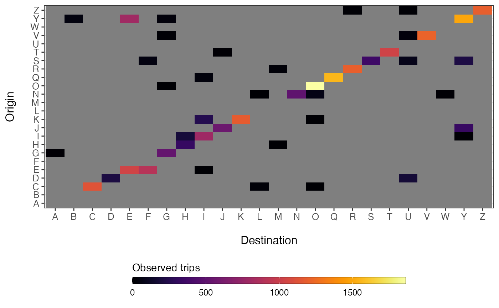

Takes X and Y coordinates of two locations and returns cross distance for all entries.
get_mob_matrix(orig, dest, value, missing_obs = "NA")
| orig | vector of origin names |
|---|---|
| dest | vector of destination names |
| value | vector of observed values for each origin/destination pair |
| missing_obs | filler value for missing observations (default = |
named numeric matrix
Other data synthesis:
get_crossdist(),
get_distance_matrix(),
get_stay_data()
x <- travel_data_sim x <- cbind(x, get_unique_ids(x, adm_start=2)) M <- get_mob_matrix(orig=x$orig_id, dest=x$dest_id, value=x$trips) library(ggplot2) ggplot(data=reshape2::melt(M)) + geom_tile(aes(x=factor(destination), y=factor(origin), fill=value)) + xlab('Destination') + ylab("Origin") + theme_bw() + theme(axis.text.x=element_text(size=10), axis.text.y=element_text(size=10), axis.title.x=element_text(size=12, margin = margin(t = 15)), axis.title.y=element_text(size=12, margin = margin(r = 15)), legend.position='bottom') + viridis::scale_fill_viridis(option='inferno', direction=1) + guides(fill=guide_colorbar(title='Observed trips', title.position='top', label.theme=element_text(size=9), barwidth=20, barheight=0.5, frame.colour='black', ticks=TRUE))